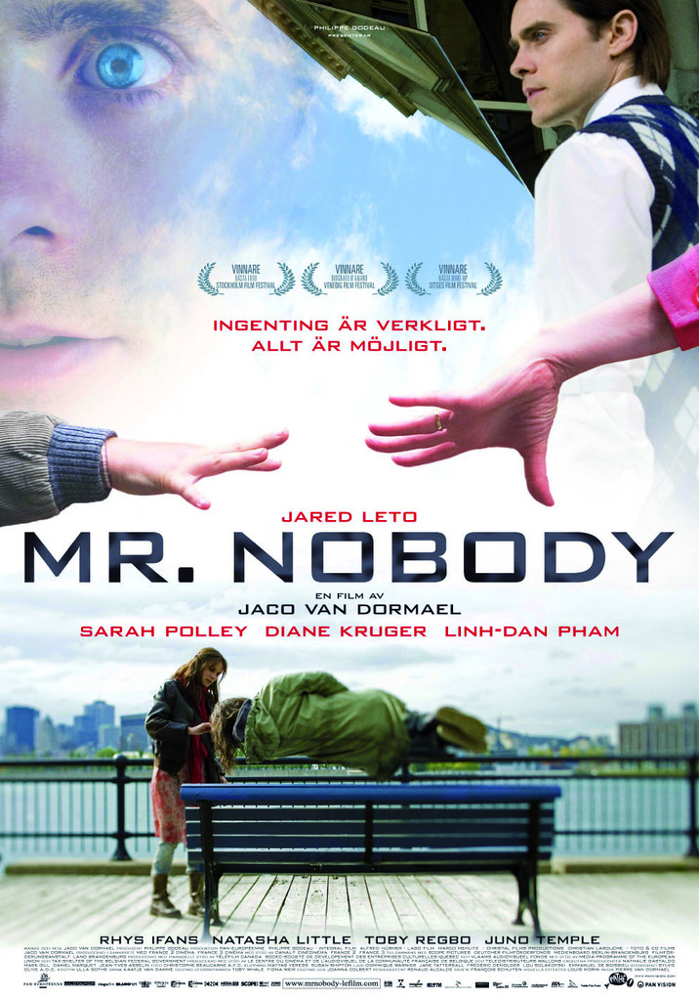
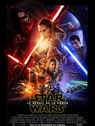
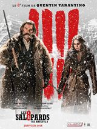
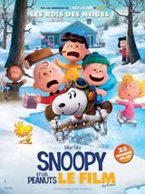
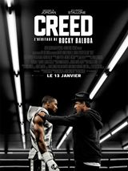
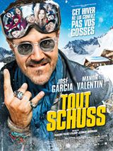

MR nobody
Star Wars - Le Réveil de la Force
Dans une galaxie lointaine, très lointaine, un nouvel épisode de la saga "Star Wars", 30 ans après les événements du "Retour du Jedi"
Les Huit salopards
Quelques années après la Guerre de Sécession, le chasseur de primes John Ruth, dit Le Bourreau, fait route vers Red Rock, où il conduit sa prisonnière Daisy Domergue se faire pendre. Sur leur route, ils rencontrent le Major Marquis Warren, un ancien soldat lui aussi devenu chasseur de primes...
Snoopy et les Peanuts - Le Film
Snoopy, Charlie Brown, Lucy, Linus et le reste du gang bien aimé des « Peanuts » font leurs débuts sur grand écran, comme vous ne les avez jamais vus auparavant, en 3D !
Creed - L'Héritage de Rocky Balboa
Adonis Johnson n'a jamais connu son père, le célèbre champion du monde poids lourd Apollo Creed, décédé avant sa naissance. Malgré tout, il a de toute évidence la boxe dans le sang et il se rend donc à Philadelphie, là même où Apollo Creed a affronté un adversaire ambitieux, Rocky Balboa...
Tout schuss
